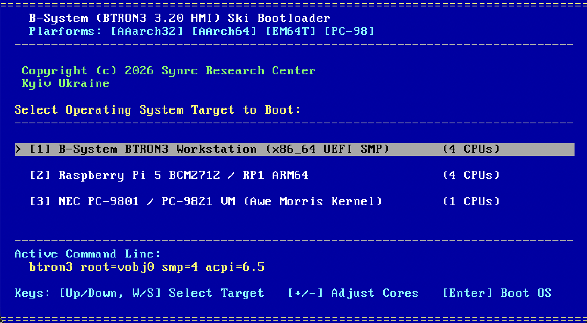

.vol）からディスクベース多重区画イメージ（Disk-Based Multi-Partition Images）への統一ブートモデルと全12ターゲットの起動要件仕様btron_sys.vol（/SYS）から直接起動し、btron_anders.vol（/ANDERS）や btron_msx.vol（/MSX）を個別スライスとしてマウントする方式を採ってきました。しかし、x86_64 UEFI SMP ターゲットにおける MBR/GPT 多重区画ディスク起動（btron-uefi-hdd.img / btron-uefi-usb.img）の確立により、生ボリュームスライス（Vol Partition Slices）の直接渡しから「単一の多重区画ディスクイメージ（Disk-Based Multiple Partitions Image）からの直接ブートと区画自動マウント」へと移行することが論理的必然となりました。本仕様書では、IDE/SATAを持たないSDカード専用機や光学メディア機を含む全ターゲットのハードウェア実態を分析し、Volumes（b_drivesetup.c）の過剰なフルディスク管理を抑制した階層別プロファイルと実装設計図を定義します。
B-System のファイルシステム層（src/fs/vol.c, src/fs/blk_part.c）において、btron_sys.vol や btron_anders.vol は本来「ディスク全体」ではなく、1024バイト論理ブロックで構成された単一のB-FS区画スライス（Volume Partition Slice）です。これまでのマルチターゲット環境では、ビルドシステム（mkbtronfs）が生成した複数の .vol スライスをホストOSファイルやRAMアドレスへ個別に配置して起動していました。
"Historically, B-System targets booted directly from standalone B-FS partition slice files (btron_sys.vol) while keeping secondary slices (btron_anders.vol) separately mountable."
一方、x86_64 UEFI SMP ビルド（Target 4）では、単一の64 MiB生ディスクイメージ（btron-uefi-usb.img および btron-uefi-hdd.img）の LBA 0 に MBR（または LBA 1 に GPT）を配置し、Partition 1 (ESP 0xEF)、Partition 2 (BTRON /SYS 0x13/0x61)、Partition 3 (BTRON /ANDERS 0x13/0x61) を単一ディスク上に統合して Ski ブートローダ（src/cores/core_boot.c）から直接ブートする機構が稼働しています。このディスクベース・マルチパーティション方式を標準ブートモデルとして体系化すると同時に、SDカードしか持たないボード（Raspberry Pi 2B/3B/4B/400）や光学ドライブ・ROM主体の機器（PS2、FOMA、SEGUI）に対して、IDE/SATA前提の重厚なフルディスク区画管理（DriveSetupの破壊的MBR/GPT再構築UI）を無差別に持ち込まないハードウェア適応型ブート＆ストレージ階層モデルを策定します。
"With UEFI builds now supporting direct disk booting via MBR/GPT multi-partition images, B-System standardizes on Disk-Based Multi-Partition Images where applicable, while avoiding overkill partition management on SD-only, optical, or ROM-resident platforms."
[virtio0:p2] SYS (BTRON OS) 等）および起動ターゲットのカーソル移動。root=virtio0:p2、コンソールボーレート、SMPコア数等）のインライン編集。smp=1..16）の動的スケーリング。0x80）またはターゲットの起動実行。
Ski Bootloader (🎿) inspecting MBR/GPT multi-partition disk images on QEMU x86_64 UEFI SMP, enumerating
[virtio0:p1] ESP, [virtio0:p2] BTRON /SYS, and [virtio0:p3] /ANDERS slices.
単体ボリュームスライス（.vol）の個別マウント方式と、統合ディスクイメージ（.img / .qcow2）からのスライス切り出し（BlkDev パーティションラッパー）方式のアーキテクチャ比較。
"Architectural comparison between legacy standalone volume slice loading and the unified multi-partition disk image boot pipeline."
| 設計項目 (Dimension) | 現行：区画スライス直接起動モデル (Legacy Vol Partition Slice Model) |
提案：多重区画ディスク直接起動モデル (Proposed Multi-Partition Disk Image Model) |
|---|---|---|
| 配布・起動メディア単位 (Artifact Granularity) |
btron_sys.vol、btron_anders.vol、btron_msx.vol の3ファイルを個別に生成・配布し、各コアがファイルまたは固定RAM番地を直接開く。 |
単一の統合ディスクイメージ btron_disk.img（またはターゲット別 btron-uefi-hdd.img / btron-pi400.img）内に MBR/GPT 区画テーブルと全ボリュームスライスを格納。 |
| ブロックデバイス階層 ( BlkDev Topology) |
blk_file_create("btron_sys.vol", 0, 0) または blk_mem_create() がそのまま 1024B ブロックの Volume* として vol_mount() に渡される（LBA 0 = VolumeHeader）。 |
親デバイス（512B セクタの blk_virtio / blk_file / blk_sd_emmc）を blk_part.c が走査し、blk_partition_create() で各区画の開始LBA・論理ブロック長（1024B/4096B/8192B）へ変換してマウント。 |
| 8セクタ IPL / VBR 整合性 (B-right/V Offset Rules) |
スライス先頭（オフセット 0）に 0x42FE / 0x52FE スーパーブロックが露出し、実機PC/ATや超漢字（hda.qcow2）の8セクタIPL予約領域と非対称。 |
blk_mbr_find_btron_partition_idx() が区画先頭 start_lba および start_lba + 8（4 KiB IPL領域スキップ）を自動プローブし、生スライスと実機B-right/V区画の双方に完全互換。 |
| ブートローダ連携 (Ski & Root Resolution) |
カーネルがハードコードされたパスまたはRAMアドレスから g_sys_vol と g_anders_vol を順次マウント。 |
Ski ブートローダが MBR 0x80（Active）フラグまたは root=virtio0:p2 引数を評価して起動区画を /SYS に確定し、同一ディスク上の後続 BTRON 区画（0x13, 0x61, 0x62）を /ANDERS・/MSX として自動マウント。 |
┌──────────────────────────────────────────────────────────────────────────────────────────┐
│ Unified Multi-Partition Disk Image (btron_disk.img — 64..192 MiB) │
├──────────────┬───────────────────────┬─────────────────────────┬─────────────────────────┤
│ LBA 0..2047 │ Partition 1 (Slot 0) │ Partition 2 (Slot 1) │ Partition 3 (Slot 2) │
│ MBR + GPT │LBA 2048..18431 (8 MiB)│LBA 18432..67583 (24 MiB)│LBA 67584..116735 (24MiB)│
│ Protective / │Type 0xEF / FAT32 ESP │Type 0x13/0x61 [Active] │Type 0x13/0x61 │
│ Ski Stage 1 │or Pi VideoCore Boot │B-FS V1/V2: /SYS │B-FS V1/V2: /ANDERS │
│ │(start4.elf, kernel8) │(Block 0: VolumeHeader) │(Block 0: VolumeHeader) │
└──────────────┴───────────────────────┴───────────┬─────────────┴───────────┬─────────────┘
│ │
blk_mbr_find_btron_partition_idx() │
▼ ▼
g_sys_vol (/SYS) g_anders_vol (/ANDERS)
すべてのターゲットが IDE / SATA / VirtIO-PCI のような汎用ハードディスクコントローラを備えているわけではありません。たとえば Raspberry Pi 2B/3B/4B/400 はブートメディアとして SDカード（EMMC / Arasan SDHCI） のみを持ち、PlayStation 2 は ISO9660 光学メディア（CDVD）、FOMA や MIPS・SEGUI は 内蔵ROM / RAMディスク で動作します。
したがって、ネイティブアプリ Volumes（src/apps/volumes/b_drivesetup.c） および Installer（src/apps/volumes/b_installer.c） のフルディスク区画管理機能（MBR/GPT初期化、任意スライス切り出し、アクティブフラグ書き換え）を全プラットフォームへ一律に強制するのは過剰設計（Overkill）であり、ハードウェアのバス特性に応じた4つのストレージ階層（Tier A〜D）へ明確に分離します。
"Because many platforms possess only SD cards, optical drives, or fixed flash/RAM without IDE/SATA buses, bringing full disk partition management of the native Volumes app everywhere is overkill. B-System classifies its 12 targets into four storage tiers."
| 階層 (Storage Tier) | 対象ターゲット (Targets) | 物理バス・メディア特性 (Bus & Media) | 提案ブートイメージ構造 (Boot Image Format) | Volumes (b_drivesetup) 機能スコープ (App Profile) |
|---|---|---|---|---|
| Tier A: フルディスク区画管理階層 Full Disk & Partition |
Target 4 (uefi)Target 0 ( posix)Target 1 ( qemu)Target 3 ( sakamura) |
VirtIO-Block PCI / MMIO、AHCI / SATA、またはホストOS上の 512B セクタ仮想ディスクファイル（.img, hda.qcow2）。複数ドライブ接続可能。 |
MBR / Hybrid GPT 多重区画ディスクイメージ（btron_disk.img / btron-uefi-hdd.img）。単一イメージ内に ESP + /SYS + /ANDERS（+ /CHOKANJI）を格納し直接起動。 |
Full Profile (フル機能有効) MBR/GPT ディスク初期化、新規スライス作成・削除、B-FS V1/V2 フォーマット、ブート可能フラグ（ 0x80）設定、b_installer による実ディスク導入を完全提供。 |
| Tier B: SDカード複合イメージ階層 SD / EMMC Hybrid |
Target 2 (arm-elf Pi 2B)Target 6 ( arm64-elf Pi 3B/4B/400) |
Broadcom EMMC / EMMC2 (SDカード単一スロット)。IDE / SATA / NVMe バス非搭載。VideoCore GPU ファームウェアが SD 先頭 FAT32 区画を占有。 | MBR ハイブリッド SD カードイメージ（btron-pi400.img）。・Part 1 ( 0x0C FAT32): start4.elf, config.txt, kernel8.img, btron_payload.bin・Part 2 ( 0x13/0x61): /SYS・Part 3 ( 0x13/0x61): /ANDERS・Part 4 ( 0x13/0x61): /MSX |
SD-Safe Profile (Volume Inspector & Mount Only) 起動中のSDカード先頭FAT32ファームウェア区画を破壊しないよう、ディスク全体のMBR/GPT再初期化・区画削除（ DIALOG_INIT_DISK / DSCMD_PART_DELETE）を無効化。既存BTRON区画（Part 2..4）およびRAMディスクのマウント切替、インスペクタ検査、区画内B-FS再フォーマットのみに限定。 |
| Tier C: レガシー固定バス・光学階層 Legacy Bus & Optical |
Target 5 (pc98)Target 7 ( m68k)Target 8 ( ps2) |
・PC-98: INT 1Bh SASI/IDE (NEC 16区画テーブル) ・M68K: NCR 53C96 ESP SCSI (Apple Partition Map / MBR) ・PS2: CDVD ISO9660 ( btron-ps2.iso) + 32MB RDRAM |
・PC-98 / M68K: MBR（またはSASI/APM互換）2区画ディスクイメージ（Slot 0: /SYS, Slot 1: /ANDERS）またはカーネル埋め込みRAMディスク。・PS2: ISO9660 光学イメージ内に BTRON.ELF と SYS.VOL, ANDERS.VOL, PAK0.PAK をフラット配置。 |
Read/Mount-Only Profile (軽量マウント管理) PS2（光学読み取り専用＋RAMバックエンド）やレトロバス環境ではパーティションテーブル編集UIを省略し、検出されたボリュームのステータス表示・マウント確認のみを提供。 |
| Tier D: 組込ROM / モバイル単一空間階層 Embedded ROM / RAM |
Target 9 (mips)Target 10 ( foma)Target 11 ( segui) |
KSEG0 直接マッピングRAM、組み込みNOR/NANDフラッシュ、または VirtIO-MMIO 単一ブロック空間。外部ストレージ拡張バスなし。 | 単一ROM/RAMペイロードまたは軽量2区画MMIOイメージ。パーティションテーブルを持たないフラットイメージ、あるいは事前ビルド済み btron_sys.vol の直結マウント。 |
Omitted (Volumes アプリ非搭載)FOMA_SRCS / MIPS_SRCS / SEGUI からは b_drivesetup.c および b_installer.c をリンク除外し、バイナリフットプリントを最小化（1 MB未満の組込予算を厳守）。 |
B-Systemがサポートする全12ターゲットにおける現在のブート方式、ハードウェアストレージインターフェース、および提案する多重区画ブートモデル（Proposed Boot Model）の詳細対照表。
"Complete technical matrix of all 12 B-System targets, detailing current boot mechanisms, physical storage interfaces, and target-specific multi-partition boot requirements."
| ターゲット | コア実装・先駆者 | 物理ストレージ / バス | 現行の起動・マウント動作 | 提案ブートモデルと区画要件 (Proposed Boot Requirements) |
|---|---|---|---|---|
| Target 0 posix |
core_posix.c高田 広章 Cleanroom TRON |
POSIX Host VFSblk_file.cblk_qcow2.cblk_part.c |
カレントディレクトリの単体スライス btron_sys.vol と btron_anders.vol を blk_file_create() で個別に開き、hda.qcow2 のみMBR走査。 |
Dual-Mode Disk & Slice Boot: 1. btron_disk.img（MBR/GPT多重区画イメージ）が存在すれば512Bセクタモードで開き、Part 1 (/SYS)・Part 2 (/ANDERS)・Part 3 (/MSX) を一括スライスマウント。2. 開発時の高速イテレーション用に個別 btron_sys.vol / btron_anders.vol へのフォールバックを維持。 |
| Target 1 qemu |
core_virtio.c常田 浩 VirtIO 1.4 MMIO |
VirtIO-Block MMIO ( 0x10001000)& Host blk_file.c |
MMIOレジスタ初期化後、実際にはホストファイル btron_sys.vol と btron_anders.vol を個別スライスとしてマウント。 |
VirtIO Multi-Partition Disk Image: 単一の btron_disk.img を VirtIO-Block デバイス0 としてアタッチし、blk_mbr_find_btron_partition_idx(dev, 0..2, 1024) により単一仮想ディスクから /SYS と /ANDERS を自動検出・マウント。 |
| Target 2 arm-elf |
core_yoko.c横林 たかひろ T-Kernel 2.0 ARMv7 |
BCM2836 EMMC (SD) & QEMU Loader RAM (Pi 2B Cortex-A7) |
startup_arm.c から btron_main() へ直接ジャンプ。外部 .vol 未ロード時は内蔵1 MiB RAMディスクを /SYS としてフォーマット。 |
SD Hybrid MBR / Preloaded RAM Disk: 実機Pi 2BではSDカードのMBR Part 1 (FAT32) からカーネルを読込み、RAMプリロード領域またはSDカード Part 2 ( 0x13) / Part 3 (0x13) から /SYS・/ANDERS をマウント。IDE/SATA非搭載のため DriveSetup のディスク初期化は無効化。 |
| Target 3 sakamura |
core_tkernel.c坂村 健 T-Kernel 2.0 Engine |
VirtIO-Block MMIO & POSIX blk_file.c |
T-Kernel 2.0 全14サブシステム起動後、単体スライス btron_sys.vol と btron_anders.vol を個別マウント。 |
Unified Disk Image Probe: Target 0/1 と共通の btron_storage_mount_multi() ヘルパを通じ、単一 btron_disk.img のMBR/GPT区画テーブルから /SYS（区画インデックス0）と /ANDERS（区画インデックス1）をマウント。 |
| Target 4 uefi |
core_boot.ccore_smp.c内田 公太 x86_64 UEFI SMP |
VirtIO-Block PCI ( virtio_blk.c)El Torito ISO9660 |
参照実装完了：btron-uefi-usb.img / btron-uefi-hdd.img (64 MiB MBR) から Partition 1 (ESP 0xEF)、Partition 2 (/SYS 0x13)、Partition 3 (/ANDERS 0x13) を走査して直接起動。 |
Reference Multi-Partition Disk Architecture: Ski ブートローダが全 VirtIO-Block PCI デバイスの MBR および GPT（ EFI PART シグネチャ、B-FS V1/V2 GUID）を走査。アクティブ区画（0x80）をルート /SYS として起動し、同一ディスク上の第2・第3 BTRON区画を /ANDERS・/MSX へ自動マウント。DriveSetup / Installer フル機能対応。 |
| Target 5 pc98 |
core_pc98.cboot_pc98.c森 あえ i386 NEC PC-98 |
PC-98 BIOS INT 1Bh (FDD / SASI / IDE) Port 0xF2 A20 |
Ski ブートローダ（PC-98モード）から32ビット保護モードへ移行。VirtIO-PCIプローブは #if !defined(BTRON_PC98_TARGET) でスキップ。 |
PC-98 Dual-Slice HDI / MBR Image: 64 MB 以下のコンパクトな2区画ディスクイメージ（Part 1: /SYS 8セクタIPLオフセット対応、Part 2: /ANDERS）またはメモリマップドボリュームを使用。レガシーI/O保護のため DriveSetup のGPT初期化は非表示。 |
| Target 6 arm64-elf (pi400) |
core_arm64.c横山 孝典 AArch64 BCM2711 |
VideoCore FAT32 SDinitramfs RAM Blob( 0x03000000)& EMMC2 SDHCI |
btron-pi400.img (192 MiB 単一FAT32) 内の config.txt が btron_payload.bin を RAM 0x03000000 へ一括展開し、固定オフセット（0x03000000 /SYS, 0x03200000 /ANDERS, 0x05400000 /MSX）を blk_mem でマウント。 |
In-RAM Multi-Partition Disk Table & Hybrid SD MBR: 1. tool_mk_pi400_payload.py の先頭（0x03000000）に標準MBRセクタを付与、またはSDカード btron-pi400.img をハイブリッドMBR（Part 1: FAT32 PiBoot, Part 2: /SYS, Part 3: /ANDERS, Part 4: /MSX）として構築。2. core_arm64.c はハードコード番地の代わりに blk_part.c のMBRパーサでRAM/SD上の複数区画を動的マウント。SDカード専用機のためVolumesのディスク破壊操作をロック。 |
| Target 7 m68k |
core_m68k.cboot_m68k.s板垣 史彦 Motorola 68040 |
NCR 53C96 ESP SCSI ( 0x50010000)& 128 MB Linear RAM |
QEMU Quadra 800 (-M q800) 上で128 MB RAMへELF直接ロード。NuBus DAFB 800x600 8-bppパレット描画。 |
SCSI / RAM Embedded Multi-Partition Image: SCSI ターゲット0 またはリンカスクリプト（ m68k_q800.ld）内の埋め込みディスクイメージに対して blk_mbr_find_btron_partition_idx() を適用し、ビッグエンディアン B-FS V1 (0x42FE) の /SYS と /ANDERS をマウント。 |
| Target 8 ps2 |
core_ps2.cps2_iso9660.c久夛良木 健 MIPS R5900 EE |
CDVD ISO9660 Optical ( btron-ps2.iso)& 32 MB RDRAM |
.data セクションの ps2_sys_vol_image[] を /SYS としてRAMマウントし、CDVD上の SYS.VOL, ANDERS.VOL, PAK0.PAK を ps2_iso_find() (2048B論理セクタ) で検索。 |
ISO9660 Multi-Volume Optical Container: PS2は32 MB RDRAM制約とCD/DVD光学メディア（ECMA-119 ISO9660）が標準であるため、MBR/GPTディスクイメージではなく ISO9660ディレクトリツリーがそのまま多重区画コンテナの役割を果たす。起動時に cdrom0:\ANDERS.VOL;1 をリードオンリーまたは差分RAMオーバーレイで /ANDERS に自動マウント。フルディスク区画管理は無効。 |
| Target 9 mips |
core_mips.cboot_mips.s進藤 雅弘 MIPS32r2 Malta |
KSEG0 Mapped RAM ( 0x80100000)NS16550 UART |
256 MB KSEG0 RAMへ直接ロードされ、RTOSエグゼクティブとシリアルモニタ（btron-mips>）が稼働（ヘッドレス構成）。 |
ROM/RAM Resident Minimal Boot: IDE/SATAやGUIを持たない組み込み・ボード検証ターゲットのため、外部ディスクパーティショニングは不要。必要時のみKSEG0 RAM上のインメモリ多重区画イメージを blk_mem + blk_part で参照。 |
| Target 10 foma |
core_foma.c新部 裕 OMAP2430 ARM1136 |
VirtIO-Block MMIO ( 0x10001000)On-Board Flash/RAM |
480x640縦画面モバイルプロファイル。btron_sys.vol と btron_anders.vol をマウントし、b_drivesetup.c / b_installer.c はビルド対象外。 |
Mobile Flash Dual-Slice Image: 携帯電話（FOMA SH903i）は内蔵フラッシュとmicroSDのみを備えるため、Volumesアプリ（DriveSetup）は引き続き非搭載。起動層（ core_foma.c）のみ単一 btron_disk.img からの /SYS + /ANDERS スライス自動認識をサポート。 |
| Target 11 segui |
segui_demo.c本田 晋也 Zero-Heap MCU |
On-Chip Flash / SRAM (Cortex-M / Appliance) |
動的ヒープゼロの4セグメント固定予算UI（STATUS / TABBAR / BODY / SOFTKEY）。外部ブロックデバイス非依存。 | Zero-Disk Static XIP Boot: マイコン内蔵フラッシュからのExecute-In-Place (XIP) 直接起動。外部ディスクやパーティションテーブルは一切使用せず、NASA JPL Rule 3 の静的メモリ予算のみで完結。 |
scripts/mk_uefi_storage.py、src/fs/blk_part.c、および src/apps/volumes/b_installer.c が共通して準拠する多重区画ディスクイメージの物理セクタ配置とパーティション識別子仕様。
"Canonical sector geometry, partition type codes, and superblock discovery offsets for B-System multi-partition disk images."
| 区画スロット (Slot) | 開始 LBA / 標準サイズ | MBR Type / GPT GUID | マウント先と役割 (Mount Point & Role) | スーパーブロック検証とオフセット規則 (Superblock Probe) |
|---|---|---|---|---|
| LBA 0..2047 (Boot & Table Area) |
LBA 0 (MBR)LBA 1..33 (GPT)1 MiB アライメント予約 |
MBR Signature: 0xAA55GPT Signature: EFI PART |
Partition Table & Stage 1 MBR 4スロット定義またはGPT 128エントリ配列。 |
sec0[510] == 0x55 && sec0[511] == 0xAA を検証。GPT保護MBR（Type 0xEE）検出時は LBA 1 の GPT Header と Partition Entry Array を走査。 |
| Partition 1 (Slot 0: Boot / ESP) |
Start LBA: 2048Size: 8 MiB〜64 MiB(16,384〜131,072 sectors) |
MBR: 0xEF (UEFI ESP) または 0x0C (Pi FAT32)GPT: C12A7328-F81F-11D2-BA4B-00A0C93EC93B |
Firmware / Bootloader Partition UEFI環境ではESP、Raspberry Pi 400では VideoCore ファームウェア（ start4.elf, fixup4.dat, kernel8.img）。 |
B-System インストーラ（b_installer.c）および DriveSetup は Type 0xEF を自動保護（上書き対象から除外）し、UEFI / VideoCore ブート整合性を維持。 |
| Partition 2 (Slot 1: Root System) |
Start LBA: 18432 (or 34816)Size: 24 MiB〜32 MiB(49,152〜65,536 sectors) |
MBR: 0x13 (BTRON) / 0x61 (B-FS V1) / 0x62 (B-FS V2)Status: 0x80 (Active Boot)GPT: 8B684653-BTRN-3100-BEEF-000000000001 |
/SYS (g_sys_vol)OSコア実身、JIS/チベットフォント、システム辞書、CLUコマンド、標準アプリケーション群。 |
start_lba（生スライス直貼り）または start_lba + 8（8セクタIPL予約付き区画）の双方で Magic 0x42FE (BE)、0x52FE (LE)、0x62FE (V2) を自動判定。 |
| Partition 3 (Slot 2: User Workspace) |
Start LBA: 67584Size: 24 MiB〜64 MiB(49,152+ sectors) |
MBR: 0x13 / 0x61 / 0x62Status: 0x00GPT: 8B684653-BTRN-3200-BEEF-000000000002 |
/ANDERS (g_anders_vol)ユーザー文書、開発ワークスペース、追加パッケージ、永続設定データ。 |
blk_mbr_find_btron_partition_idx(vdev, 1, 1024) により第2のBTRON区画として自動検出され、起動時に /ANDERS へ読み書き可能マウント。 |
| Partition 4 (Slot 3: Extended Media) |
Start LBA: 116736Size: 32 MiB+(65,536+ sectors) |
MBR: 0x13 / 0x61 / 0x62Status: 0x00 |
/MSX または /CHOKANJIT-BIOS / MSX ROM ボリューム（ btron_msx.vol）または超漢字互換区画。 |
第3のBTRON区画（target_idx == 2）が存在する場合、VolumeHeader の vol_name（"MSX", "CHOKANJI" 等）を読み取って /MSX 等へ動的マウント。 |
システム電源投入から多重区画ディスクのMBR/GPT走査、ルート区画（/SYS）とユーザー区画（/ANDERS）の自動マウント、およびBTRONデスクトップ立ち上げまでの5段階シーケンス。
"Five-stage execution pipeline from cold power-on to MBR/GPT partition discovery, multi-volume mounting, and BTRON desktop handoff."
| フェーズ | 処理内容 (Execution Stage) | 所要時間・C99実装関数 (Timing & Implementation) |
|---|---|---|
| Phase 1: ディスプレイ＆バス初期化 | 電源投入後、ネイティブフレームバッファ（UEFI GOP / VirtIO-GPU、VideoCore Mailbox、PC-98 GDC、PS2 GS）とストレージコントローラ（VirtIO-Blk PCI/MMIO、SDHCI、CDVD）を即時初期化。 | T < 50 msvirtio_blk_pci_probe_all()init_pi_framebuffer() |
| Phase 2: MBR / GPT 区画テーブル走査 | 接続された各ディスクの LBA 0（MBR）および LBA 1（GPT）を読み出し、各区画の開始LBA・セクタ長・Typeコード・VolumeHeaderラベル（vol_name）をプローブ。 |
ski_init_targets()blk_mbr_find_btron_partition_idx()+0 / +8 セクタIPL自動補正 |
| Phase 3: Ski ブートメニュー＆ルート選択 | アクティブフラグ（0x80）を持つBTRON区画をデフォルト選択（例：[virtio0:p2] SYS (BTRON OS)）。[↑/↓]で別区画やLive Installerへ切替可能。 |
render_ski_menu()引数: root=virtio0:p2 smp=4 |
| Phase 4: 多重区画の自動スライスマウント | 選択されたブート区画を g_sys_vol（/SYS）としてマウント後、同一ディスク内の残りのBTRON区画を走査し、vol_name に基づいて g_anders_vol（/ANDERS）や /MSX を自動マウント。 |
btron_storage_probe_and_mount()blk_partition_create() → vol_mount() |
| Phase 5: SMP 整列とデスクトップ委譲 | APコアを INIT-SIPI-SIPI（または PSCI / スピンテーブル）で整列させ、マウント済みの /SYS・/ANDERS 実身空間を伴って workbench_init() へ制御を委譲。 |
btron_smp_boot_aps()workbench_render() |
本ドキュメントのブートモデルをコードベース全体へ反映するための5つの実装フェーズ（Makefile、パーティションパーサ、コア起動ロジック、Pi 400 SD/RAM統合、およびVolumes UIガード）。すべての変更は NASA/JPL Rule 3（起動後の動的ヒープ確保ゼロ） および scripts/test_structure.sh の構造不変条件を厳守します。
"Concrete five-step C99 and build-system implementation plan for unified multi-partition disk booting across all B-System targets."
| 実装ステップ (Step) | 対象ファイル (Target Files) | 設計仕様と変更内容 (Engineering Specification) |
|---|---|---|
| Step 1: GPT ＆ 汎用多重区画スキャナの拡張 (Partition Parser Upgrade) |
src/fs/blk_part.cinclude/fs/block.hinclude/fs/bfs_disk.h |
・現行の blk_mbr_find_btron_partition_idx() を拡張し、MBR Type 0x13（Chokanji）に加えて 0x61（B-FS V1）、0x62（B-FS V2）、および署名/暗号化コード（0xB3..0xB5, 0xE1..0xE4）をすべてBTRONブート対象区画として認識。・MBR に Protective GPT（Type 0xEE）が存在する場合、LBA 1 の GPT Header（"EFI PART"）と LBA 2..33 の GPT Entry Array を静的バッファで走査する blk_gpt_find_btron_partition_idx() を追加（GUID 8B684653-BTRN-... および 706D636F-7270-... 照合）。・フリースタンディング環境用の静的区画記述子プール MAX_PART_DESCS（16スロット）を維持。
|
| Step 2: 統合多重区画ディスクビルダと Makefile ターゲット (Unified Disk Image Builder) |
scripts/mk_uefi_storage.pyMakefile |
・scripts/mk_uefi_storage.py に汎用ターゲット btron_disk.img（64 MiB MBR/GPT: Part 1 ESP 0xEF 8 MiB、Part 2 /SYS 0x13 24 MiB Active 0x80、Part 3 /ANDERS 0x13 24 MiB）の生成モードを追加。・ Makefile の posix, qemu, sakamura, foma ターゲットにおいて、btron_disk.img を生成・参照可能にしつつ、既存の単体 btron_sys.vol / btron_anders.vol ビルドおよび単体テスト（test-fs, test-storage-images）との100%後方互換を維持。
|
| Step 3: 共通マルチパーティション自動マウントエンジン (Core Auto-Mount Unification) |
src/cores/core_boot.csrc/cores/core_posix.csrc/cores/core_virtio.csrc/cores/core_tkernel.csrc/cores/core_foma.c |
・core_boot.c の btron_storage_probe_and_mount() を拡張し、Ski で選択された区画（s_targets[s_selected].dev_idx / part_idx）を優先して g_sys_vol（/SYS）にマウントした後、同一ディスク（および他接続ディスク）の残りのBTRON区画をループ走査し、VolumeHeader の vol_name が "ANDERS" なら g_anders_vol へ、それ以外（"MSX" 等）なら追加ボリュームとして vol_mount() へ登録。・Hosted コア（ core_posix.c, core_virtio.c, core_tkernel.c, core_foma.c）の btron_core_hfds_log() において、まず btron_disk.img（または環境変数 BTRON_DISK_IMAGE）を 512B セクタ BlkDev としてプローブし、MBR/GPT区画が見つかればそこから /SYS と /ANDERS をスライスマウント、存在しない場合は従来の btron_sys.vol / btron_anders.vol 単体スライスへフォールバック。
|
| Step 4: Pi 400 / ARM64 ペイロードのMBR区画テーブル化 (ARM64 SD/RAM Partition Table) |
scripts/tool_mk_pi400_payload.pysrc/cores/core_arm64.cinclude/btron/arm64_mem.h |
・Raspberry Pi 4B / Pi 400（core_arm64.c）では、RAM 0x03000000 にロードされる btron_payload.bin（またはSDカード上のセクタ空間）を走査する際、先頭512バイトにMBRシグネチャ（0x55AA）が存在すれば blk_mbr_find_btron_partition_idx() によって /SYS、/ANDERS、/MSX 区画スライスを動的に切り出してマウントするパスを追加（従来の固定アドレス 0x03000000 / 0x03200000 / 0x05400000 生マジック判定もフォールバックとして保持し run-yoko4 の -device loader と完全互換を維持）。
|
| Step 5: Volumes (DriveSetup) のプラットフォーム適応プロファイル制限 (Platform Capability Guard in Volumes) |
src/apps/volumes/b_drivesetup.hsrc/apps/volumes/b_drivesetup.c |
・デバイス構造体 DriveSetupDevice（またはコンパイル時マクロ BTRON_STORAGE_TIER）にケイパビリティフラグ bool is_partition_table_editable を導入。・Tier A（ /dev/virtio* および POSIX 新規ディスクイメージ）では is_partition_table_editable = true とし、MBR/GPT 初期化・区画作成・削除をフル開放。・Tier B / C（SDカード起動の ARM32/ARM64 実機、単体スライスファイル btron_sys.vol / btron_anders.vol、PC-98 / M68K / PS2）では、起動メディア自身のパーティションテーブル破壊を防ぐため、［ディスク初期化...］［区画作成...］［区画削除］をグレイアウト／拒否し、ステータスバーに "Platform storage uses fixed/SD partition layout (Volume mount & inspect only)" を表示。
|